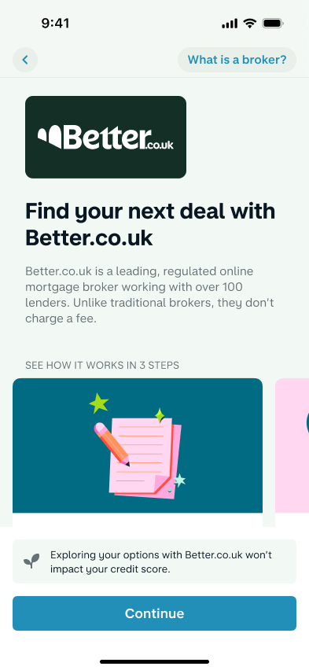
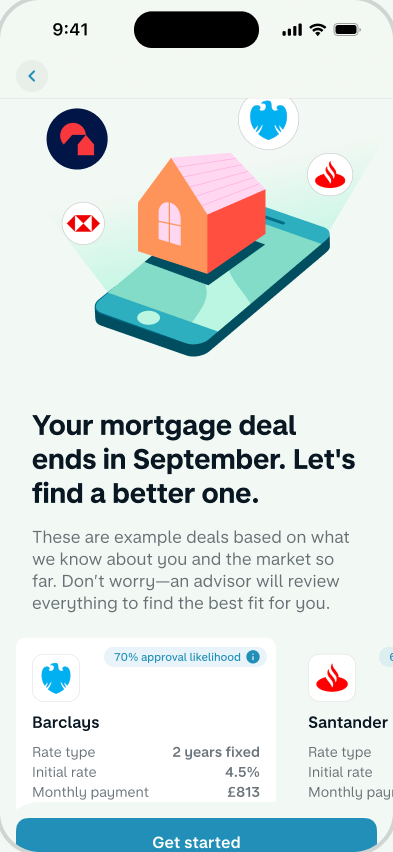
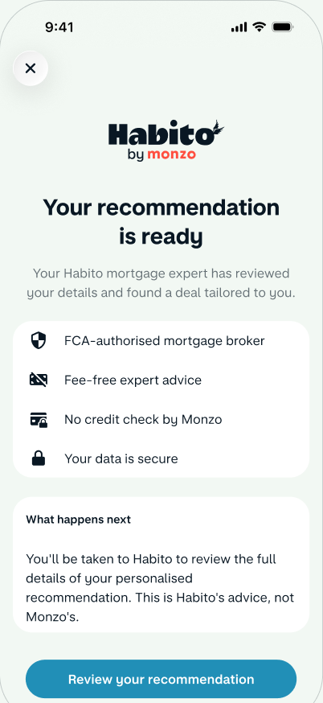
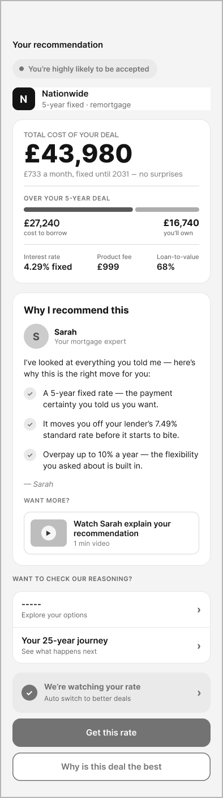
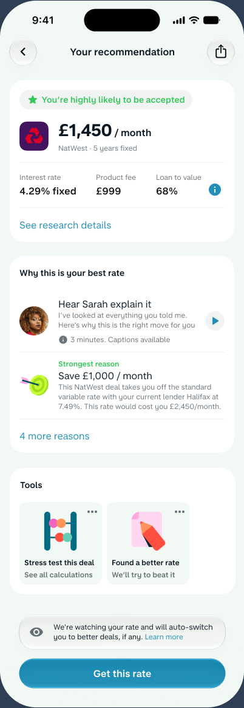
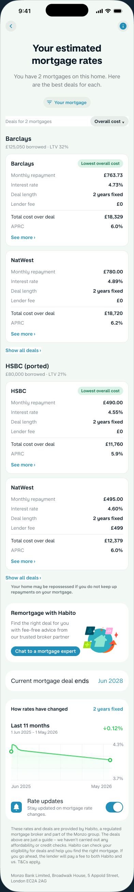

Monzo customers loved seeing their mortgage in the app — but it didn’t make money


connected mortgages, from almost any UK lender
See your balance and equity, model overpayments, see how a new rate changes your payment
An engagement product, with no revenue
To make money, we launched remortgaging with Better.co.uk — it worked, but not enough



~5,000 customers · ~£1.5m revenue
We missed our revenue goals, and by late 2024 growth had stalled
Our success ended at the referral. Once people left Monzo, we were blind to everything after it.
The first click-out journey I designed, 2024
See the experiments we ran with Better ↗In 2025 and 2026, I led design for remortgaging through a strategy reset and an acquisition
Vision and growth
- Led the vision: one remortgage journey inside Monzo
- Designed how to implement it, and the first implementation
- Designed all the growth experiments, including the new entry points
- Led the value-proposition workshop
Habito integration
- Integrated Habito, adapting the journey to their operations
- Recommendations in the app
- Adviser chat in the app (had to be paused)
- Improved the progress tracker
- Next: growing with first-time buyers
One squad
- 1 product manager
- 6 engineers
- 1 data scientist
- User researcher (left after the vision)
- Operations and Compliance
- Me, on design


2025 · The vision

2026 · Recommendations in the app
We lent our engineers for two months — and used the time to listen
Financial Health needed engineers
And our experiments weren’t moving the numbers
A discovery sprint
Customer research, a vision, and a feasibility check. Research with customers who remortgaged, and customers who dropped out.

The research, told as comic strips: two customers we interviewed · Monzo blog
Customers wanted one journey — but not the same one
“Don’t send me out.”
They expected to get the new deal inside Monzo, not on another website.

“Use what you know.”
Reuse the data Monzo already holds, instead of asking again.

“Let me choose.”
Some wanted a call for reassurance; others wanted to self-serve, with a human on hand.

“Tell me what’s happening.”
The wait was the most stressful part.

George
Got his new deal, but was frustrated at being sent to a partner’s website to do it.
Carla
Gave up when she hit the friction of doing it all outside the app.
Two personas from the 1:1 research interviews, 2025 · customers who remortgaged with us, and customers who dropped out
I turned the vision into bets the team could ship

- A progress tracker closer to real time no-brainer
- Pre-fill with data we already hold
- Test: adviser first vs. deals first parked when Habito arrived
- Our own application form
- Market deals up front
- Joint applicants

- Recommendations in Monzo became my 2026 work
- Adviser chat became my 2026 work
- Document upload
Reach people before they’re ready to remortgage
Only customers with a connected mortgage and a known deal end could enter. About 2.5m customers had a mortgage we couldn’t see.
- Ways in that don’t need a connection: rates, deals, “add your deal end”
- Focus View: a mortgage home screen that adapts to where you are
- Homeownership moved into the Grow tab
- An experiment file linking every design to its data
~75% above the referral goal: 7.5K referrals against 4.3K · team result

Indicative rates · no connection needed

Estimated deals

Rate updates · on your home screen
First, I became the customer
Before the workshop, I went through Habito’s journey myself, as a real applicant, and captured every screen.
- Applied as a customer, from the first tap in Monzo to the mortgage illustration
- Kept every screen, email and document in one Figma page
- Marked where Monzo stopped and Habito started
- A second account and a second brand, halfway through
- A long form before any value
- The recommendation and the messages lived on Habito’s site, not in Monzo
It gave the team one shared picture of the journey as it really was, not as the diagram said it was.

Tell people what this actually is
People thought it was a comparison tool. When a broker asked about their finances, it felt like a bait-and-switch.
Stopped the pre-fill experiment early and turned it on for everyone to make Day 1. Speed over learning, on purpose.
- Reframe as a broker, not a comparison site
- Lighter consent, commission disclosure kept
- Trust signals early
- A clear “what happens next”
- Account creation framed as a benefit
- Pre-fill on for everyone

My Day 1 entry screen
“Do I trust this recommendation enough to go ahead?”
I scored today’s screen against what confidence actually needs.
Verdict: they could see the deal. They couldn’t really decide.

The quick win: tell people the moment it’s ready
People were ready, but our only reminder came three days later. The moment a recommendation arrives is when they care most.
- Before: one push, on day 3
- Test: a push on day 0, and again on day 3
- Measured on accepted recommendations
Option B. The tracker already existed, so we could test momentum quickly.

- 2 taps to the recommendation
- A whole screen to build trust
- A new screen to build
- 3 taps to the recommendation
- A screen people already know
- Nothing new to build
Four rounds before the version you’re about to see

A top pick, with alternatives
Checked against the research: no way to reach the adviser from the screen, no honest sense of urgency.

Total cost first
Not the monthly rate. And stay or switch, in pounds: staying with your lender is simpler, switching can be cheaper.

A hub with tools
Stress-test the deal, hear the adviser explain it. After the crit: more progressive disclosure.

One recommendation, reasons first
The deal, why, the real cost, what was ruled out. Everything else one tap away.
What I’d take to the next problem
Growth at the top isn’t growth
Design the middle of the funnel as carefully as the entry point

The integration is part of the design
Routing, consent and who-you’re-talking-to are UX, not plumbing

Speed needs a kill switch
Agree the guardrails and the rollback before you ship

Name the problem first
“Compare” vs. “broker”: one word changed what people expected

Why this matters for Benefits
Partners whose systems you don’t own
Monzo + Habito + lenders → Deel + providers

Status and support people can trust
Who am I talking to, and what happens next?
Rules that change by market
Regulated wording, checked early

Decisions that matter a lot
To the people making them

Two mortgages, one home: four ways to show it




The tools were built for one person with one mortgage. Two mortgages, or a couple, saw confusing or different numbers.
Show the property first, then its mortgages.
The data already adds up at property level. The screen didn’t.
The cheapest fix: both mortgages are already there, they just render badly.
Where it goes next: your mortgage data, straight from your lender

Through Open Banking, with consent you control: you choose the accounts and renew every 90 days.
“You’ll reach the next loan-to-value band before your deal ends.” “Overpaying beats your savings pot.”
“Switching now would cost £2,900 in early repayment charges.” Shared with the FCA as part of Monzo’s Open Finance work.